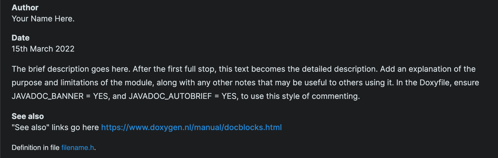
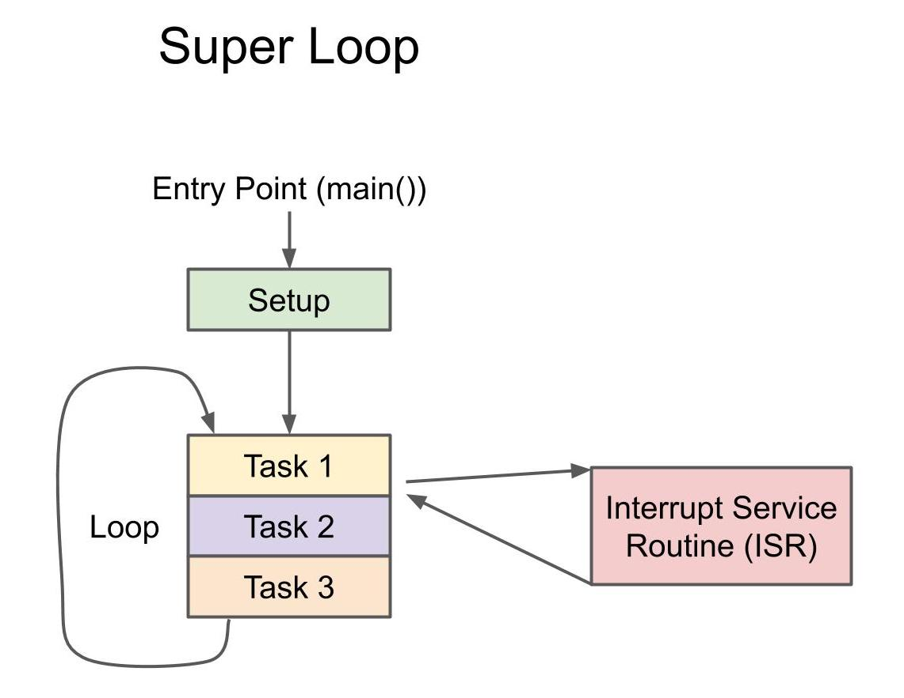

- Generated by
 1.9.3
1.9.3
|
AVRly - AVR Development Resources
|
Throughout this repository, the code has been documented using Doxygen. It's an easy way to generate documentation which stays closely coupled with the code so it's not too difficult to keep the two in line. The html for this site was also generated using Doxygen. It relies on special comments like /** Comment goes here */ however normal C style comments like // Comment goes here are ignored by Doxygen.
Leave a comfortable amount of whitespace between logical sections of code, to make things easy on the eye. Header, Source and Makefiles should all be limited to 80 characters wide.
At the top of each file, a copyright notice and licence terms are added. This let's other users know whether they can use and distribute this software, and the terms under which they may do so. The software in this repository is released under the MIT licence. Add the year the work was produced and your name at the top.
The licence and copyright notice are enclosed in a Javadoc style banner, which Doxygen will recognise as a banner comment. To use this stye of banner, JAVADOC_BANNER = YES must be set in the Doxyfile. Add your name in the copyright notice.
A C header file should be named after the function of the file or the peripheral that it serves. The filename should be entirely in lowercase, and the file extension is .h. The aim is to expose as little information as possible in the header file - just the public function declarations and any macros or typedefs etc required by other files, without them having to know too much about how it actually works.
An example file can be found in the repo here, and the Doxygen output from these special comments and commands can be found here.
After the license, place a Javadoc style comment block with some special Doxygen commands: @file, @author, @date, @brief, @bug and @see.
The doxygen output from these special comments looks like this: 
Next come the include guards - a preprocessor mechanism used to prevent the header file contents being included in other files multiple times.
#include directives come next, with standard library headers listed first, then the local, project specific headers. You can think of these #include directives as inserting the whole contents of the header file referenced into that section of the file.
Public typedefs, structs, enums etc come next, along with any macro definitions.
Function prototypes/declarations are now listed, with the initialisation function first. In the Doxyfile, ensure JAVADOC_AUTOBRIEF = YES to use this style of commenting.
The file ends with closure of the header guards, two blank lines and an /*** end of file ***/ comment followed by a blank line.
C source files should have the same name as their respective header file (if they have one) all in lowercase, with the filename extension .c
The source file provides the implementation and definitions of the public functions listed in it's header file, usually along with some helper functions, structs, macros and variables private to the file.
An example file can be found in the repo here, and the Doxygen output from these special comments and commands can be found here.
Begin with a licence and copyright notice as before, and then the Doxygen commands to provide some information about the file.
#include directives come next, with standard library headers listed first, then the local, project specific headers. These serve as an instruction for the preprocessor to insert the contents of the named header file in that section of the source file.
Next we have macro definitions.
Then we have structs, enums, typedefs, and variable declarations and initialisations.
Next in line are function prototypes/declarations for private helper functions defined at the bottom of the file. They are declared ahead of any definitions to ensure they can be referenced throughout the file.
Now we have the definitions for the public functions, listed in the same order as they appear in the header file, with the initialisation routine first.
Lastly, we have the definitions of private helper functions. Since they are less likely to be needed by people using the software, they are located at the bottom of the file.
The file is ended with two blank lines and an /*** end of file ***/ comment followed by a blank line.
Macro definitions for ports, pins, data direction registers and GPIOs should be listed in the pin_defines.h file. When you have a larger project, it's much clearer to be able to see the pinout all together in one place, rather than strewn across multiple files.
An example file can be found in the repo here, and the Doxygen output from these special comments and commands can be found here.
Again we start with the Javadoc style Doxygen comment block to provide some info about the file.
Then we have our include guards, as with all .h files.
This header is required to access pin and port names.
Then we make our macro definitions for pins, ports and GPIOs - see datasheet for more on this.
The file ends with closure of the header guards, two blank lines and an /*** end of file ***/ comment followed by a blank line.
main.c is where the int main() routine lives, and is the heart of the application.
An example file can be found in the repo here, and the Doxygen output from these special comments and commands can be found here.
It begins, as usual with the Javadoc style Doxygen comment block to provide some info about the file.
Followed by #include directives, (standard library headers first).
And then macro definitions.
Then we have structs, enums, typedefs, and variable declarations and initialisations.
Lastly, we have the main() routine. Initialisation routines are called on entry of the main routine, this is the Setup stage. Then we enter the while loop, and this runs continuously until the device is powered off or a reset condition is met. The return statement is needed for valid syntax, as the special function main() expects to return an integer value.
This application that will be run on the target MCU as a superloop. 
The file is ended with two blank lines and an /*** end of file ***/ comment followed by a blank line.
The Makefile contains "recipes" intended to simplify the process of building your application. With this, you only need to type make to compile and link your code, rather than manually listing the many options, flags, dependancies etc in the terminal each time.
An example file can be found in the repo here. They cannot be dosumented using Doxygen, so I prefer to use a help recipe instead. Type make help to see a list of commands available to the user.
The Makefile must always be named "Makefile". Keep basic user defined variables at the top of the file.
If you add a new recipe for users to invoke from terminal, document it by adding it to the help recipe at the bottom of the Makefile.
The repository contains templates for each file type mentioned in this guide.